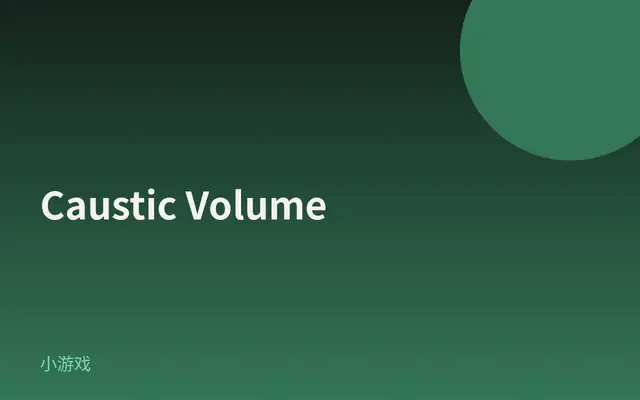
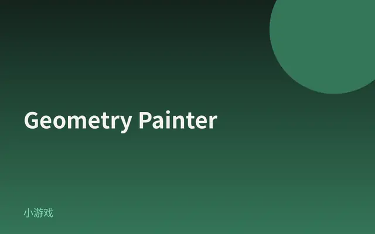
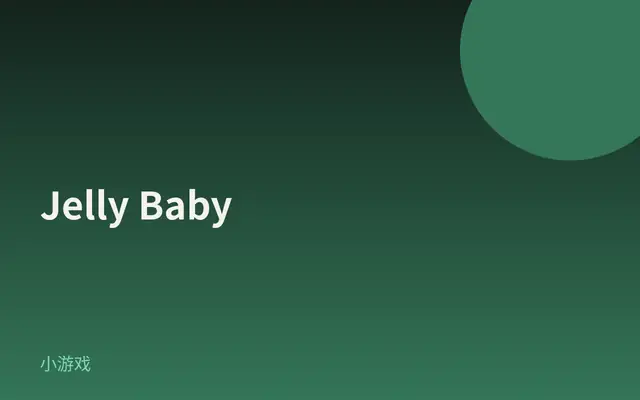
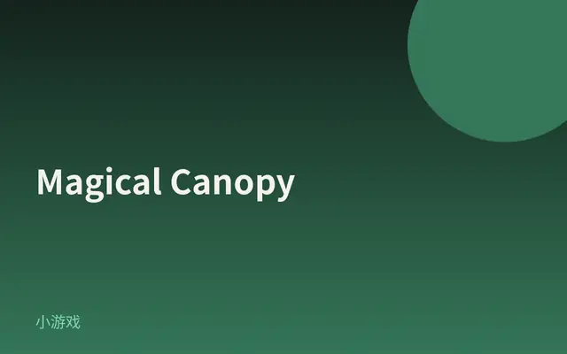
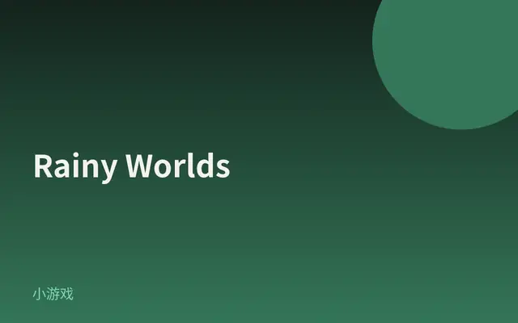
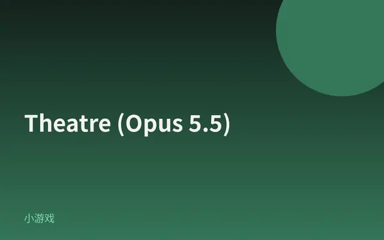
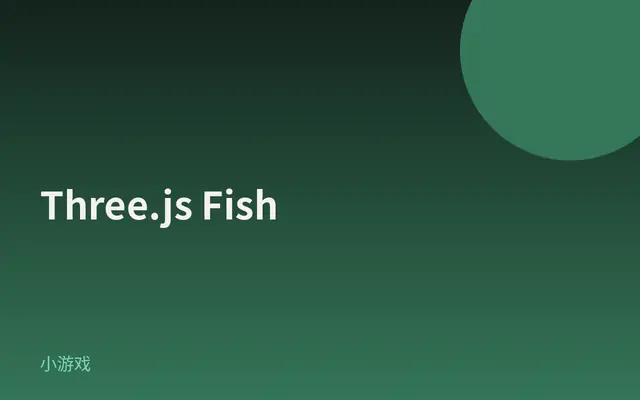

Lumin Hands
两只用发光丝线织成的手：WebGPU/TSL 实时 lit tubes，点击冲击波与光晕，视觉冲击极强。
打开网站 ↗它是什么：两只用发光丝线织成的手：成百上千根 lit GPU tubes 在黑暗里描出轮廓，一点击就炸开冲击波和光晕。
好在哪：一眼就被「电光手」抓住；丝线不是贴图，而是 WebGPU/TSL 实时弯管发光，比静态酷站更像可玩的光装置。
怎么做到的：
- 每根丝是一根细管：用 MeshStandardNodeMaterial 的 positionNode 在 GPU 上弯出管壁，再叠自发光。
- 大量丝线靠 StorageBuffer + instanceIndex 铺开；关掉 frustumCulled，避免 shader 改位置后被误裁。
- UnrealBloomPass 把亮部晕成光晕，SMAA 收细管锯齿；Pointer 点击按教程驱动冲击波。
完整技术拆解
今日拆解 · Lumin Hands
- Live: https://luminhands.netlify.app/
- Author: Mathis Biabiany
- Source / 教程: https://tympanus.net/codrops/2026/09/07/drawing-with-light-an-exploration-of-lit-gpu-tubes-with-tsl-and-webgpu/
- Bundle: Vite 产物
/assets/index-CFuvyyFx.js（HTML 含/vite.svg、type="module"） - 证据：对本页 HTML + 主 bundle（含
const _0="185"、WebGPURenderer、MeshStandardNodeMaterial、positionNode、UnrealBloomPass、SMAANode、StorageBuffer、instanceIndex）的抓取核对；Codrops 教程作对照
为何选它
8 条里它视觉冲击最强：两只「手」不是建模出来的实体，而是成百上千条发光丝线（lit GPU tubes）织成的轮廓——点击会炸开冲击波与光晕，像在黑暗里用电光描边。Codrops 2026-09-07 刚拆完 WebGPU/TSL 管线，比静态酷站更值得当今日最炫。
实际在源码里找到的技术栈
const _0="185"；data-engine 写入 three.js r${_0} webgpuWebGPURenderer；HTML title 为 Three.js WebGPUMeshStandardNodeMaterial（2 次）；配合 TSL 节点给管子上标准光照感this.positionNode=null 与 positionNode!==null 赋值路径；normalNode 亦出现。管子顶点位置由 TSL 节点驱动，而不是静态 mesh 顶点StorageBuffer、StorageBufferAttribute、StorageBufferNode；instanceIndex（8 次）——大量丝线用 storage + 实例索引在 GPU 上摆开UnrealBloomPass（3 次）；配合 mrtNode / emissive 路径做发光 bloomSMAANode（9 次）——后处理抗锯齿Tweakpane / tweakpane——调试面板/vite.svg、/assets/index-*.js 模块脚本；典型 Vite 构建产物Pointer 极高密度（200+）；click 多次。点击冲击波与光晕的具体数学公式以 Codrops 教程为准（教程细节，非 bundle 字面量公式）motion@x.y.z / GSAP 字面量作为主交互；未找到 Three.js WebGLRenderer 作为主渲染器字面量；bloom 库的 npm semver 未在 bundle 字面量找到 → 只确认类名 UnrealBloomPass核心效果怎么工作（源码 + 标明推测）
1. WebGPU + Three.js r185 主路径（确认）
页面用 WebGPURenderer 启动；data-engine 写成 three.js r185 webgpu。没有走经典 WebGL 主渲染器。
2. 发光丝线 = 实例化 lit tubes（确认 · TSL）
每条「丝」是一根细管。材质走 MeshStandardNodeMaterial，用 positionNode（以及 normalNode）在 TSL 里算管壁上的点——所以管子可以沿手的轮廓弯曲、发光，而不必为每根丝准备独立静态几何。
3. StorageBuffer + instanceIndex 铺开成百上千根（确认）
丝线数量很大时，位置/参数放进 StorageBuffer，着色器里用 instanceIndex 取自己的那一份。这是「两只手由大量相似丝线组成」的 GPU 侧实现。
4. frustumCulled 必须关掉（确认）
顶点位置由 shader/positionNode 改写后，CPU 侧的包围盒不再可靠；bundle 多次出现 frustumCulled。不关就会出现丝线莫名消失。
5. 发光：UnrealBloomPass + emissive / MRT（确认类名）
UnrealBloomPass 与 mrtNode、大量 emissive 符号同在。管子本身偏自发光，bloom 只把亮部「晕」出去，所以黑暗背景上丝线像霓虹。
6. SMAA 后处理（确认）
SMAANode 做抗锯齿，细管边缘才不会锯成毛刺。
7. 指针与点击冲击波（确认有 Pointer；冲击波细节 = 教程）
Bundle 里 Pointer / click 极多，说明交互主路径是指针。Codrops 教程写明点击会产生冲击波并驱动光晕——具体波前如何改 positionNode / 亮度，以教程为准（标为教程细节）。
8. 伪代码（忠实于 bundle 符号 + 教程结构）
boot:
renderer = new WebGPURenderer(...) # Three.js r185
mat = MeshStandardNodeMaterial({
positionNode: tubePositionTSL(...), # 弯曲管子
normalNode: ...,
// emissive 路径供 bloom
})
strands: StorageBuffer + instanceIndex # 成百上千根
mesh.frustumCulled = false
post:
UnrealBloomPass (emissive / mrtNode)
SMAANode
pointer:
Pointer + click → shockwave / glow # 教程细节
Tweakpane 调参（debug）如果我来重做（步骤清单）
- Vite +
three/webgpu，锁定 Three.js r185，主路径只用WebGPURenderer。 - 先做单根 lit tube：
MeshStandardNodeMaterial+positionNode弯管。 - 用
StorageBuffer/instanceIndex铺成手形轮廓；关掉frustumCulled。 - 加
UnrealBloomPass（emissive）和SMAANode。 - Pointer 点击写冲击波，用 Tweakpane 暴露管径、bloom、波强度。
- 用较新的 Chrome / Edge 验证 WebGPU；对照 Codrops 2026-09-07 教程补交互手感。
零基础也能看懂。先认识这件作品用到的技术，再学一个知识点。
1技术栈小白版
只列拆解里在源码中确认过的技术。点开看它在这件作品里做了什么。
Three.js r185
在这件作品里整双手的丝线场景、相机和渲染管线都跑在 Three.js r185 上。
怎么认出来浏览器里能实时转、点、发光的 3D，而不是一段固定视频。
WebGPURenderer
在这件作品里主渲染器是 WebGPURenderer，所以成百上千根 lit tubes 还能保持流畅。
怎么认出来用较新的 Chrome / Edge 打开更稳；页面标题也写着 Three.js WebGPU。
MeshStandardNodeMaterial
在这件作品里每根发光丝线的管壁材质走它；再配合 positionNode 把管子弯成手的轮廓。
怎么认出来丝线看起来有体积和高光，不像平面画上去的线。
positionNode
在这件作品里管子顶点由 positionNode 驱动，所以丝线能弯、能被冲击波推开。
怎么认出来点击后丝线会像被风吹开，而不是整只手模型硬挪位置。
StorageBuffer / instanceIndex
在这件作品里大量丝线的数据放进 StorageBuffer，着色器用 instanceIndex 取出自己那一根。
怎么认出来你看到的是「密密麻麻很多根相似的线」，而不是一只平滑的手套模型。
UnrealBloomPass
在这件作品里管子自发光之后，UnrealBloomPass 把亮部扩散成霓虹光晕。
怎么认出来黑暗背景上，手指边缘会冒一圈柔和的光，而不是死硬的亮线。
SMAANode
在这件作品里细管很多，SMAANode 负责把边缘收干净。
怎么认出来丝线边缘比较顺，不像老游戏里那种明显台阶锯齿。
2今日知识点
格式塔（上）：接近与相似
人眼不是一个像素一个像素地「数」东西，而是会自动分组。格式塔心理学里最常用的两条：接近（离得近的算一组）和相似（长得像的算一组）。
Lumin Hands 没有建模一只光滑的手 mesh，而是铺了成百上千根又细又亮、彼此靠近的丝线。因为它们相似（都是发光细管）又接近（挤在手指轮廓里），你的大脑直接读成「两只手」——这就是接近 + 相似在干活。
设计上你可以故意用这两条：要让人看出「这是一组」，就让元素长得像、靠得近；要拆开两组，就拉开距离或改掉颜色/形状。
反过来：如果丝线颜色乱、间距忽大忽小，手的完形就会散掉——技术再炫，分组一乱，认知就跟不上。
今日口诀：近的像的 = 一组。先问「我有没有让该成组的东西够近、够像？」再谈特效。
它从哪里来
格式塔（Gestalt）心理学兴起于 20 世纪初的德国，核心主张是「整体不等于部分之和」——人先看到结构，再看到零件。
马克斯·韦特海默（Max Wertheimer）等人整理出接近、相似、闭合、连续等组织律，后来被平面设计、UI、信息图广泛借用。
在创意前端和数据可视化里，这两条几乎天天用：散点何时成「簇」、导航何时成「一组按钮」，靠的都是接近与相似。
Lumin Hands 是 contempor 的 WebGPU 作品，但观众秒懂「这是手」，靠的仍是一百年前就被写清楚的视觉组织律。
经典参考
- Max Wertheimer · Laws of Organization in Perceptual Forms（格式塔组织律原典脉络）接近律、相似律的经典来源；不必啃全文，知道「人会自动分组」即可。
- Codrops · Drawing with Light（Lumin Hands 教程）看作者如何用大量相似 lit tubes 织出手形——技术选择服务于「被读成手」。
- Gestalt Principles · 可交互说明（任选可靠设计教育站）用图示复习接近与相似；今天先掌握这两条，闭合/连续留到 t-03。
- 打开 Lumin Hands，盯住 3 秒：你是先看到「很多线」，还是直接看到「手」？把第一印象写下一句。
- 想象把丝线颜色改成红绿蓝随机、间距拉得忽大忽小——手还在吗？用接近/相似各写一条「为什么会散」。
- 看自己手机桌面或常用 App 底栏：哪一组图标是靠「接近」成组的？哪一组是靠「相似」（同色/同形）？各举一例。
小词典
- 格式塔（Gestalt）
- 强调「整体结构」的心理学传统；设计里常指那些让人自动把元素看成一组的规律。
- 接近律（Proximity）
- 空间上离得近的东西，更容易被看成同一组。
- 相似律（Similarity）
- 颜色、形状、方向等属性相近的东西，更容易被看成同一组。
- 完形 / 组织
- 大脑把零散刺激整理成有意义形状的过程；Lumin Hands 里就是把丝线织成「手」。
3知识地图进度







设计雷达 · 每天 8 个值得看的网站、App UI 和网页小游戏